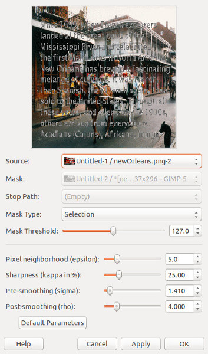

New Orleans Example
Open the examples/new_orleans.png image from the repository
Select the red text using the Select By Color Tool. Simply click anywhere on the red text using this tool and all the text should be selected.
Run the plug-in in Filters/Misc/Inpainting.... Choose Selection for the mask type. This will use the current selection for the inpainting region.
Use the following parameters (or just use the default parameters):
And hit OK. The result should look like this...

Just clear the selection and you have a nice clean inpainted image.